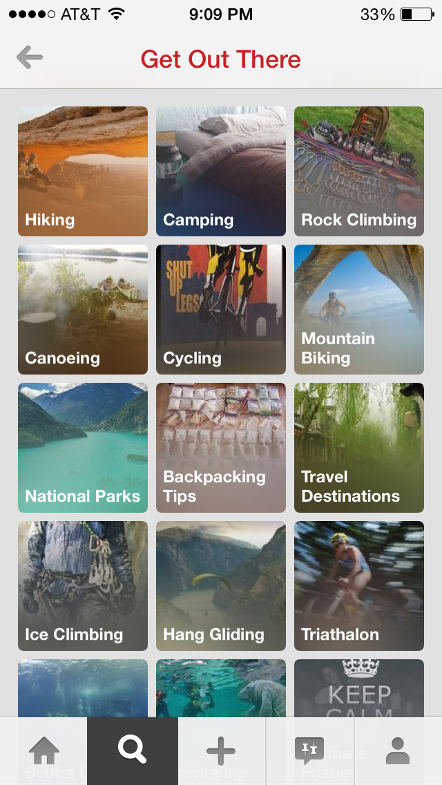
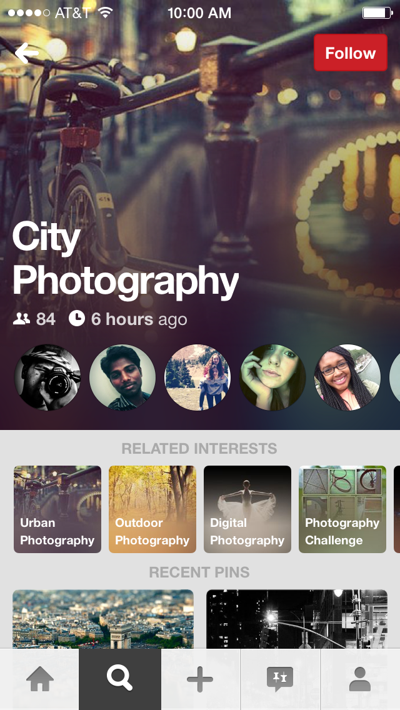
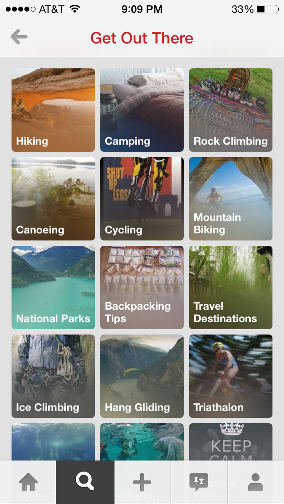
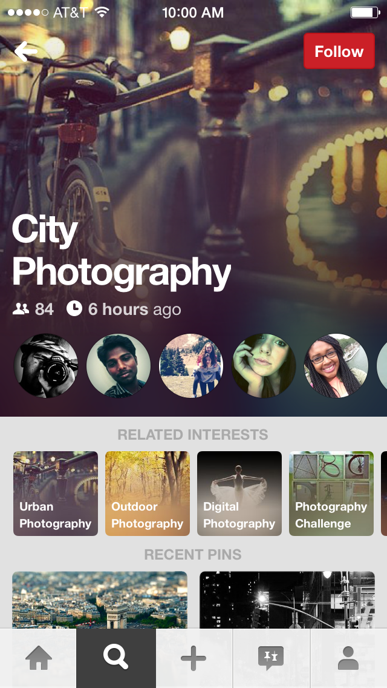
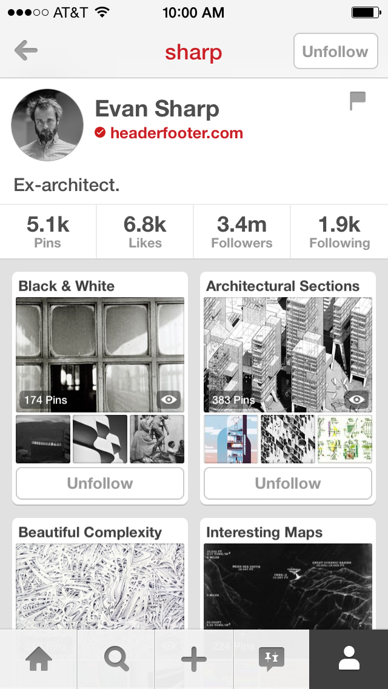
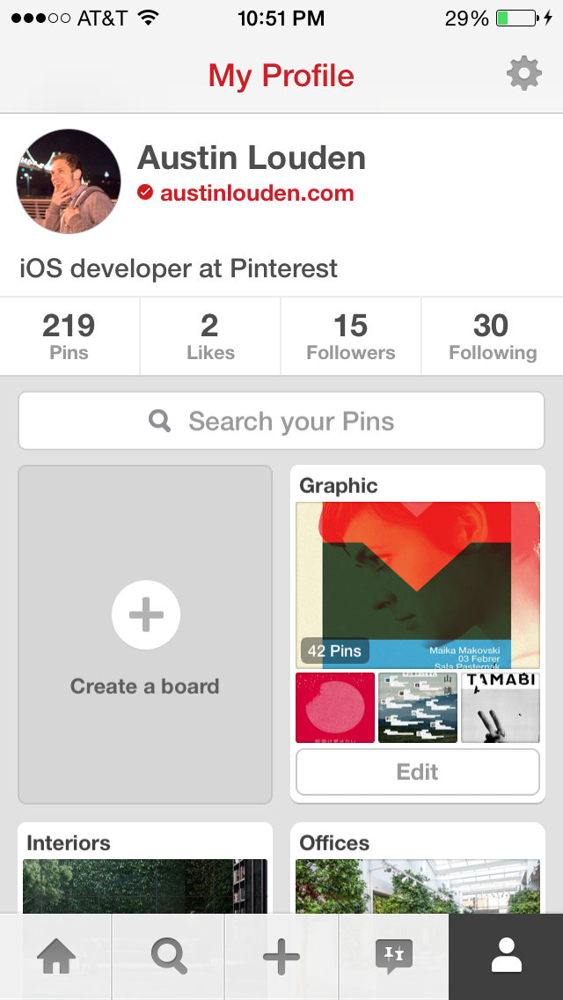
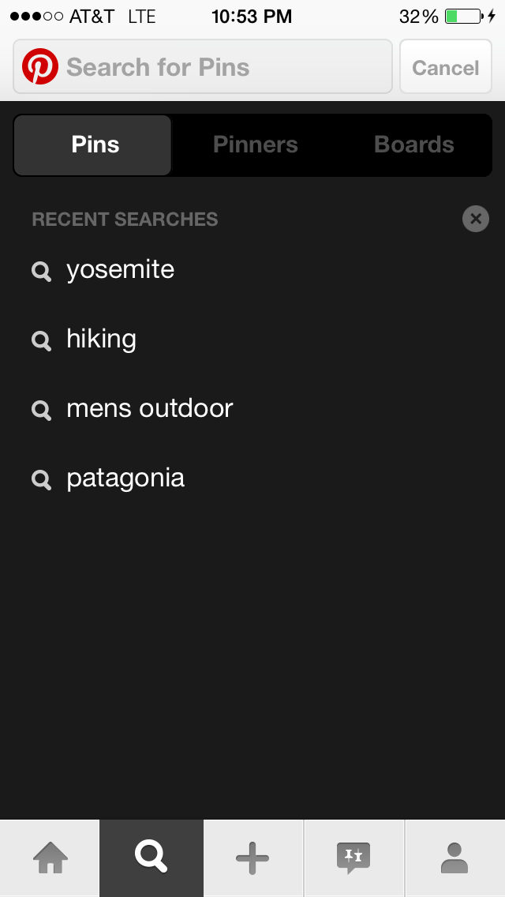
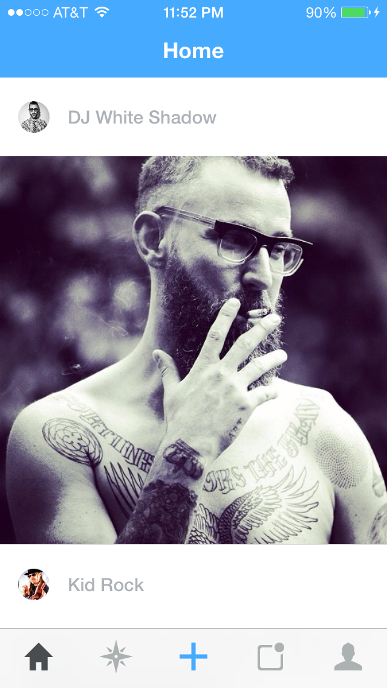
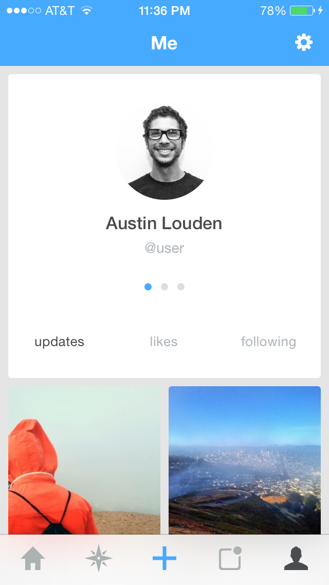

iOS Development
Interests
Interests is feature that allows people to follow and curate the things they're interested in. You can read more about it on Pinterest's blog.
 



{kind=link}
{kind=link}
Find Your Pins, Search, & Profile Redesign
The ability to search through your own pins on Pinterest has been a popular user-requested feature for a long time. I'm delighted to say that it's finally available on iOS. This project also included a redesign of search typeahead and the user profile page.
  {kind=link}
{kind=link}
{kind=link}
Special thanks: Steven Ramkumar, Bill Kunz, Andreas Pihlström, and Jason Wilson.
STAGEBLOC
iOS & Web Development
iPhone App Redesign
StageBloc is a platform for content creators, including popular musicians, artists, and photographers. I helped rebuild the iPhone app from the ground up.
 {kind=link}
{kind=link}
{kind=link}
Justin Timberlake
I built some internal tools to assist with the launch of thetennesseekids.justintimberlake.com.
{kind=link}
Better App Reporting Kit (BARK)
BARK is an open-source library for reporting issues in iOS apps. Using the GitHub API, BARK allowed testers to embed images and device information directly into GitHub issues. You can find the source here.
{kind=link}
Special thanks: Tom Giles, Josh Holat, and JD Hartley.